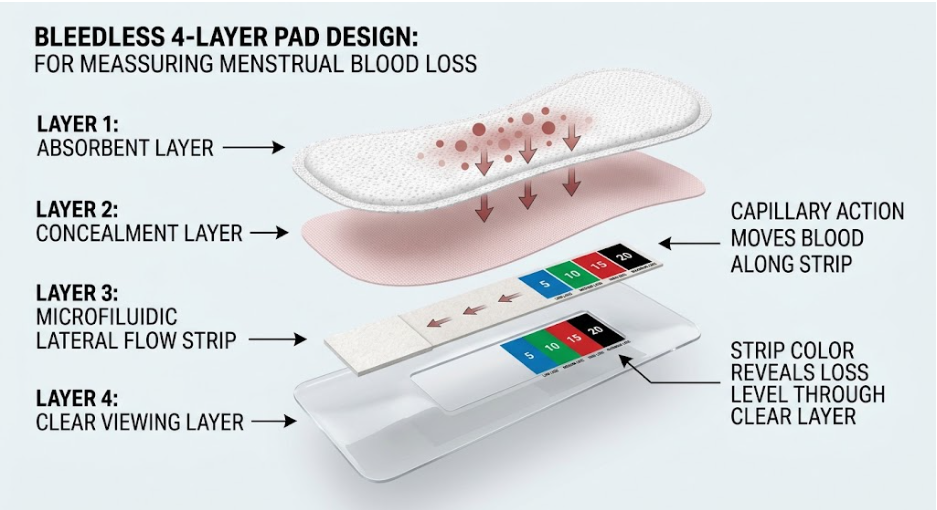

Period Health Monitoring System
Period health monitoring, built into the pad.
BleedLess is a four-layer pad with a microfluidic lateral flow strip. The strip changes color as blood reaches it, so you can see how much you lose, estimate the iron in it, and plan what to eat.
10 count, $40. 25 count, $75.
5
10
15
20
Strip color key, mL of blood on one pad

4-layer designAbsorbent, concealment, strip and clear viewing layers.
Microfluidic stripLateral flow moves blood by capillary action.
5, 10, 15, 20 mLBlue, green, red and black strip colors.
Iron estimateEach color maps to iron lost and foods to replace it.
Pad design
Four layers, one clear reading
Blood passes through the absorbent and concealment layers to the strip. Capillary action moves it along the strip, and the color shows through the clear viewing layer.

- 1Absorbent layerDraws blood into the pad and away from the surface.
- 2Concealment layerHides the blood from view while letting it pass through to the strip.
- 3Microfluidic lateral flow stripA thin inlet, too thin to feel, feeds the strip. Capillary action moves blood along it and the strip changes color.
- 4Clear viewing layerA clear window shows the strip color so you can match it to 5, 10, 15 or 20 mL.
Color key
Your color, your iron, your next meal
Pick the color you see in the window. Blue, green, red and black stand for 5, 10, 15 and 20 mL of blood on one pad. Blood carries about 0.5 mg of iron in every mL, so each color maps to an iron amount.
Blood on this pad
Iron lost
Iron outlook
To replace it, try one of these
Example day, change the counts
Add up your day
How many pads of each color did you use today?
Iron lost today

BleedLess app
Log your strip in the app
Match the color and the app shows your estimated blood loss, status, iron estimate and recommendations.
- 1Check the stripLook through the clear viewing layer after about a minute.
- 2Select the closest colorCompare your strip with the chart in the app and choose the match.
- 3Read your resultsSee estimated blood loss, status, an iron level estimate and recommendations.
- 4Follow your cycleResults sit alongside your cycle day, so you can follow your pattern over time.
No phone handy? The color key above gives the same color-to-iron estimates.
Iron-rich foods
Foods that put iron back
Iron per serving, from highest to lowest. Animal foods carry heme iron, which the body absorbs more easily. Plant foods carry non-heme iron, so pair them with vitamin C. Open a group to see the foods in it.
Add vitamin C
Squeeze lemon over lentils, add peppers to beans, or eat an orange with your cereal. Vitamin C helps the body take up plant iron.
Space out tea and coffee
Tea and coffee reduce iron absorption when drunk with a meal. Have them an hour or two before or after.
Ask before supplements
Iron pills can cause side effects, and too much iron is harmful. If your strips are often red or black, talk to a doctor first.
Buy online
Choose your pack
The BleedLess Period Health Monitoring System in two pack sizes. Prefer to buy in person? Find a pharmacy below.

10 count
$40
$4.00 per pad
Packs
Best value

25 count
$75
$3.00 per pad, $25 less than buying 25 at the 10 count price
Packs
Your order
Subtotal$0
Shipping and tax are added at checkout.
Rather pick up in person? Find a pharmacy.
Buy in person
Find a pharmacy near you
Pick up BleedLess at a partner pharmacy, or order online above. Enter your ZIP code or city to search pharmacies near you.
Sample partner pharmacies
Stock varies by store. Call ahead to check availability.
Questions
Questions people ask
How does the strip know how much blood there is?
Blood passes through the absorbent layer and the concealment layer to the microfluidic lateral flow strip. Capillary action moves it along the strip, and the strip changes color to show the loss level. You read the color through the clear viewing layer.
What do the colors and numbers mean?
Blue 5, green 10, red 15 and black 20 are the amount of blood on one pad, in mL. Blue is very light loss, green is light, red is moderate and black is heavy.
How long until the color shows?
The color settles in about a minute after blood reaches the strip. Check the clear window each time you change your pad.
How is the iron amount worked out?
Blood carries about 0.5 mg of iron in every mL. So blue is about 2.5 mg, green 5 mg, red 7.5 mg and black 10 mg of iron on one pad. These are estimates, not a lab result.
Do I need the app?
The app makes it easier. You check the strip color, select the closest match, and see your estimated blood loss, status, iron estimate and recommendations, along with your cycle day. You can also read the color key on this page.
Will I feel the strip?
No. The strip sits in its own layer under the concealment layer, and the thin inlet that feeds it is too thin to feel.
What does a black strip mean?
Black means the pad holds about 20 mL, which is about 10 mg of iron. Many people have a heavy day. If you soak through a pad every hour or two for several hours, or you feel dizzy, faint or short of breath, get medical care. If black or red shows up often, ask a doctor about a ferritin and hemoglobin blood test.
Does BleedLess diagnose iron deficiency?
No. BleedLess estimates the iron you lose through blood on your pads. Only a blood test can confirm low iron.
Can food replace the iron I lose?
For many people, regular meals with iron-rich foods help. The suggestions here are ordinary foods with their iron per serving. If your strips are often red or black, ask a doctor before taking iron supplements.
Should I buy online or at a pharmacy?
Both work. Online you can order a 10 count for $40 or a 25 count for $75. If you want a pad today, use the map to find a pharmacy near you and call ahead to check stock.